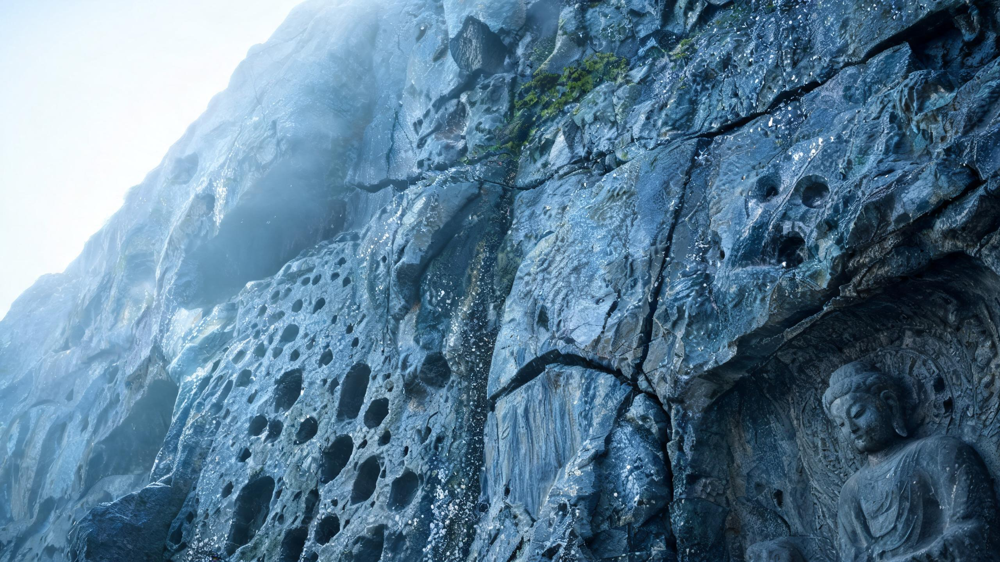
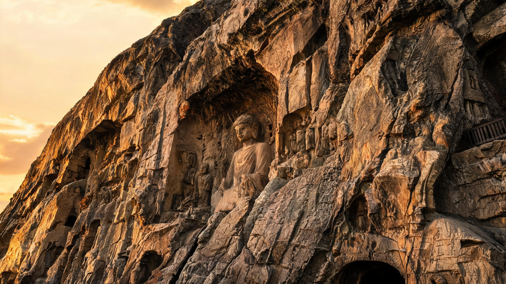
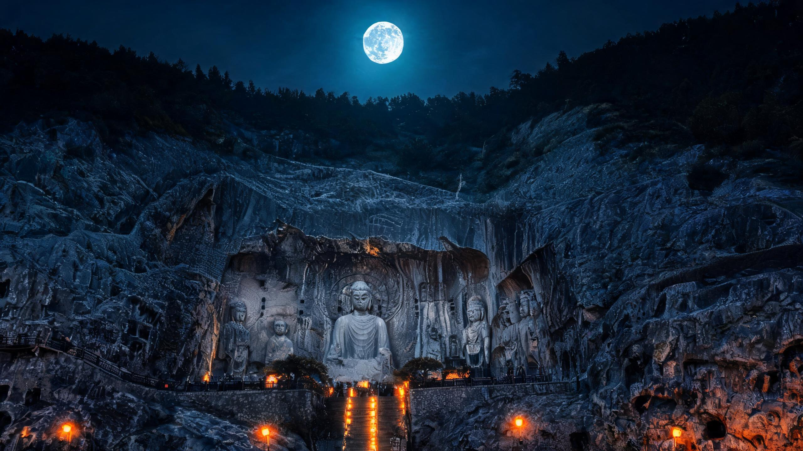

拖拽左右旋转 · 点击金色标记查看详情
视角: 0°
东方材质的晨昏之变
同一崖壁材质在三种色温光照下的质感差异

晨光 · 5500-6500K 冷蓝
光影特征
色温5500-6500K
光质柔光漫射
氛围薄雾·露水·湿润
材质表达宁静沧桑
粗糙度凸显层级
柔光均匀照亮表面，中观（裂纹、凿痕）与微观（包浆、矿物沉积）粗糙度同时凸显。露水附着石面产生微弱光泽。
历史感词汇
生物侵蚀类词汇效果最佳
moss patches, lichen in joints, centuries of exposure, morning dew on weathered stone

暮色 · ~3200K 暖金
光影特征
色温~3200K
光质夕阳逆光·侧光
氛围苍劲·戏剧性
材质表达凿痕被侧光放大
粗糙度凸显层级
低角度侧逆光极端放大宏观（差异风化、侵蚀沟槽）与中观（裂纹、凿痕）粗糙度。凿刻痕迹被侧光凸显。
历史感词汇
人文痕迹类词汇效果最佳
ancient chisel marks, foot traffic wear, erosion grooves, differential weathering

夜景 · 4100K月光 + 2700K灯笼
光影特征
色温月光4100K + 灯笼2700K
光质冷暖双温·点光源
氛围神秘·隐约深沉
材质表达Chiaroscuro明暗对照
粗糙度凸显层级
仅光照区域内中观粗糙度可见。月光照亮整体轮廓，灯笼暖光区局部照亮材质细节，形成极端明暗对比。
历史感词汇
材质异化类词汇效果最佳
mineral streaks, rain erosion channels, displaced flagstones, differential weathering
奉先寺文化标识系统
五组纹饰图标 · 对应造像叙事功能
CDWA 元数据著录
Categories for the Description of Works of Art · 龙门石窟奉先寺